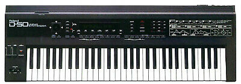

Fundada el 1972 a Osaka.
Al igual que Korg, Roland s'ha dedicat sempre al disseny i fabricació d'instruments musicals (no com Yamaha que també te una llínea de vehícles).
Roland no es a soles coneguda per fer les caixes de ritmes com les TR-808 i TR-909 (utilitzades per infinitat d'artistes de tot el mon); a 1987 i competint directament amb el seu rival Korg M1, es llançat al mercat el D50. Una de les obres mes notables d'aquest sinte, está present al disc Watermark de Enya.
